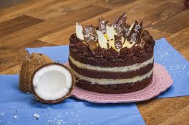

Bolo Prestígio de Gala

Ingredientes:
- 4 ovos tipo jumbo inteiros - gemas peneiradas
- 1 colherde chá de essencia de baunilha
- 350g de açucar refinado
- 180ml de óleo de milho ou girassol
- 240ml de água filtrada e fervente
- 70g de cacau ou chocolate em pó peneirado
- 240g de farinha de trigo
- 1 colher de chá de bicarbonato em pó
- 1 colher de sopa de fermento em pó
- 1 pitada de sal
Modo de preparo:
- Bata no liquidificador as claras, as gemas peneiradas e a baunilha. Junte o açucar aos poucos e bata por 3 minutos.
- Adicione o óleo, a água fervente, o cacau em pó e bata bem.
- Em uma tigela, bata a mistura com os ingredientes secos peneirados até formar uma massa lisa e homogênea
- Despeje a massa em uma forma untada e leve ao forno preaquecido à 180°C.
Calda para regar
Ingredientes:
- 200ml de agua filtrada
- 100g de açucar granulado
- 25ml de licor amaretto ou conhaque
Modo de preparo:
- Em uma panela, misture a água e o açucar. Ao ferver, deixe por mais 3 minutos.
- Desligue o fogo, deixe amornar e adicione o licor ou conhaque.
- Regue o bolo ainda quente com a calda.
Creme prestígio
Ingredientes:
- 1 lata de leite condensado
- 50g de açucar refinado
- 30g de amido de milho
- 30g de farinha de trigo
- 150g de coco fresco ralado em flocos ou hidratado
- 720ml de leite UHT integral
- 1 colher de chá de essencia de baunilha
- 1 colher de chá rasa de essencia de coco
- 1 colher de sopa de licor de coco
Modo de preparo:
- Em uma panela, coloque o leite condensado, o açucar, o amido de milho, a farinha de trigo e misture até ficar homogêneo
- Junte o coco fresco, o leite e leve ao fogo, mexendo sempre, até obter um creme firme
- Por ultimo, agregue os aromas e espalhe em um refratário grande, cubra com plastico filme e deixe esfriar
- Empregue na montagem do bolo
Ganache de coco
Ingredientes:
- 400g de chocolate cobertura ao leite
- 1 lata de creme de leite com soro ou UHT
- 1 colher de sopa de glucose de milho
- 10g de manteiga extra sem sal
- 1 colher de café de essencia de coco
- 50g de coco ralado fresco ou hidratado
Modo de preparo:
- Em uma tigela, coloque todos os ingredientes, exceto o coco fresco e leve ao fogo em banho maria ou microondas até obter um creme liso e brilhante
- Reserve 1/2 xícara desta ganache e, ao restante, agregue o coco ralado fresco
- A ganache reservada será para decorar a lateral do bolo
Decoração
Ingredientes:
- 100g de chantilly batido
- 50g de raspas de chocolate ou chocolate granulado
- 100g de coco em flocos ou em fitas finas
Montagem:
Utilizando um aro de 24cm de diametro, inicie a montagem do bolo intercalando um disco de massa levemente regado com a calda de chocolate, espalhe por cima toda a Ganache de Coco, outro disco de massa regada, Creme Prestígio e finalize com o último disco de massa regada. Em seguida, cubra o bolo com plástico filme e leve-o a geladeira por algumas horas ou até o dia seguinte. No dia seguinte, desenforme o bolo, espalhe a ganache reservada em toda a lateral e o chantilly em toda a superfície. Por último aplique as raspas de chocolate ou o granulado na lateral e decore com o fogo na superfície.